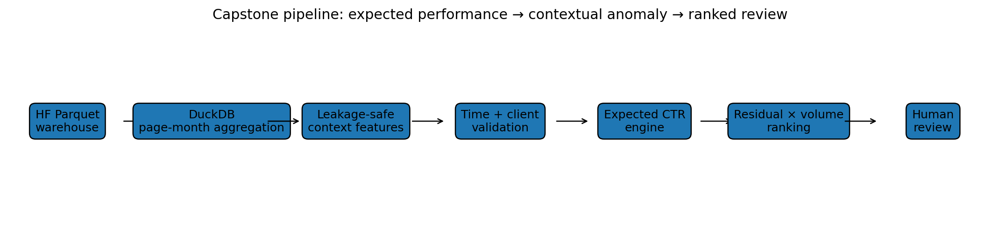
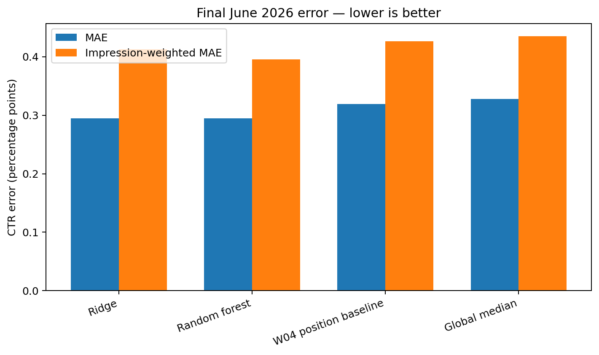
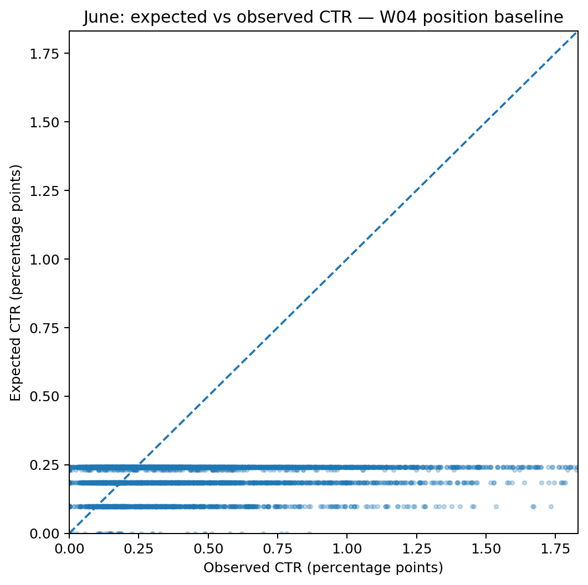
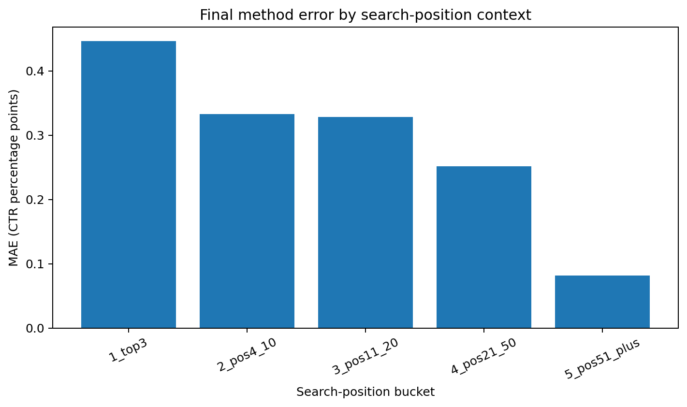
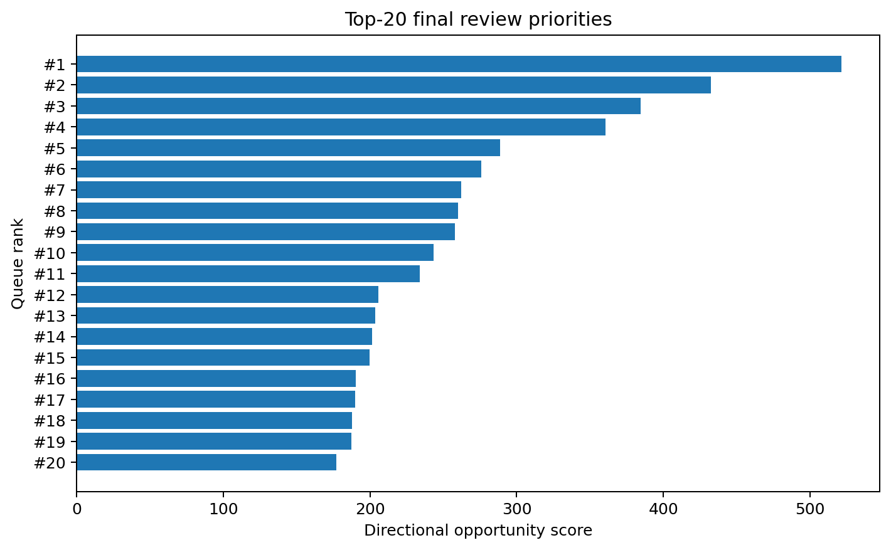
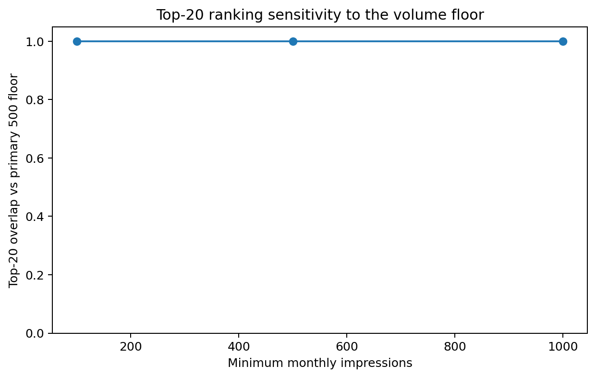

Context-Aware Performance Anomaly Ranking
A leakage-safe system for learning expected search click-through performance, detecting high-impact under-capture, and producing an auditable human-review queue.
Abstract
Editorial teams need to decide which visible pages deserve limited review capacity, but raw CTR thresholds are unfair because expected CTR changes with search position, traffic volume, and measurement stability. Using the FlyRank internship warehouse, this study aggregates daily search measurements into page-month observations and learns expected CTR from non-click operating context. A frozen position-adjusted rule is compared with Ridge and Random Forest regression using later-time validation plus a held-out-client stress test, with June 2026 kept as the final sealed test month. On the sealed June 2026 test, Ridge and Random Forest reduced MAE by 7.6% and 7.5%, respectively, versus the frozen W04 baseline; however, neither had cleared the predeclared 10% held-out-client complexity bar before June was opened, so the transparent W04 baseline remained the final action engine. The resulting positive expected-minus-observed CTR residual is scaled by impressions to form a directional ranked review queue; the output is decision support only and does not imply that an edit will causally increase traffic.
1. Introduction / Problem Statement
The operational question is simple: which existing pages should a human inspect first? A universal CTR cutoff ignores the fact that a page near position 2 operates under a different click environment from a page near position 25. The project therefore treats low CTR as a contextual performance anomaly: first estimate what CTR is normally observed under measured search conditions, then prioritize large negative deviations only when enough exposure exists for the difference to matter.

2. Data
The source is the gated FlyRank internship warehouse release v20260703. Its daily performance fact contains 78,835,655 rows at report-date × client × content grain. This study uses full monthly partitions from February through June 2026 and aggregates them to one pseudonymized client × content × month observation. January is excluded because the warehouse begins on January 27 and is therefore not a comparable full calendar month.
Rows require valid GSC availability and at least 100 monthly impressions for extraction. The primary model comparison uses at least 500 impressions.
The target is observed CTR in percentage points: 100 × clicks / impressions.
Clicks and CTR are never model inputs; IDs are grouping/audit keys only.
3. Methodology
The feature vector contains only non-click search context available by the end of the scored month:
log_impressions, avg_position, days_with_impressions, active_day_fraction, position_volatility, impression_spikiness, daily_impression_cv, log_impression_momentum, position_shift.
This makes the task end-of-period contextual monitoring rather than future-month forecasting.
The frozen W04 baseline predicts the training-set median CTR for a page's position bucket. Two learned alternatives are prespecified: regularized Ridge regression and a constrained Random Forest. All preprocessing is fitted only on training rows. The primary split trains on February–April and validates on May; a second grouped test holds out entire clients. The learned models did not satisfy the predeclared complexity rule, so the transparent position-adjusted baseline was retained rather than claiming unnecessary ML value. Only after this selection is frozen are all pre-June observations used to fit the final engines and June opened once for evaluation.
May validation
| Method | MAE (pp) | Weighted MAE (pp) | R² |
|---|---|---|---|
| Random forest | 0.24878 | 0.20833 | 0.01903 |
| Ridge | 0.25687 | 0.23471 | 0.00747 |
| W04 position baseline | 0.26993 | 0.23498 | -0.16370 |
| Global median | 0.27663 | 0.24213 | -0.18722 |
Held-out-client stress test
| Method | MAE (pp) | Weighted MAE (pp) | R² |
|---|---|---|---|
| Random forest | 0.22387 | 0.20378 | 0.13798 |
| Ridge | 0.22578 | 0.20746 | 0.12105 |
| W04 position baseline | 0.23108 | 0.21825 | -0.08272 |
| Global median | 0.24384 | 0.23331 | -0.14594 |
4. Results
Predeclared selection result. The learned models did not clear the frozen complexity bar on both later-time and unseen-client evidence, so the transparent W04 position baseline remains the final engine.
On the sealed June 2026 test, Ridge and Random Forest reduced MAE by 7.6% and 7.5%, respectively, versus the frozen W04 baseline; however, neither had cleared the predeclared 10% held-out-client complexity bar before June was opened, so the transparent W04 baseline remained the final action engine.
Final June comparison
| Method | MAE (pp) | Weighted MAE (pp) | R² |
|---|---|---|---|
| Ridge | 0.29471 | 0.41285 | -0.02436 |
| Random forest | 0.29495 | 0.39576 | -0.03880 |
| W04 position baseline | 0.31903 | 0.42677 | -0.15911 |
| Global median | 0.32770 | 0.43501 | -0.19134 |



5. Limitations & Honest Framing
- The study is observational. A high opportunity score does not prove that changing metadata or content will increase clicks.
- Expected CTR is learned from measured context, but unobserved query intent, SERP features, brand/navigation behavior, and seasonality can still explain apparent underperformance.
- The model uses end-of-month context to monitor that month's performance; it is not a before-the-month traffic forecast.
- Client histories are unbalanced and search measurement availability differs across clients.
- The final June month is a one-period test. Continued deployment should monitor drift and later outcomes.
A controlled rollout or A/B design would be required before making causal uplift claims.
6. Ranked Recommendations
For June, the final method creates 14,955 candidates after the primary eligibility rules.
The score is max(expected CTR − observed CTR, 0) / 100 × impressions.
It is best read as directional under-capture at meaningful exposure, not promised incremental clicks.
| Rank | Impressions | Avg position | Observed CTR (pp) | Expected CTR (pp) | Gap (pp) | Opportunity score | Confidence | Reason | Suggested action |
|---|---|---|---|---|---|---|---|---|---|
| 1 | 235427.0 | 7.0737 | 0.0191 | 0.2407 | 0.2216 | 521.6113 | high | page_one_high_volume_ctr_gap | review_title_meta_and_intent |
| 2 | 179662.0 | 7.8436 | 0.0000 | 0.2407 | 0.2407 | 432.3995 | medium | page_one_high_volume_ctr_gap | review_title_meta_and_intent |
| 3 | 169233.0 | 7.4788 | 0.0136 | 0.2407 | 0.2271 | 384.2996 | high | page_one_high_volume_ctr_gap | review_title_meta_and_intent |
| 4 | 171004.0 | 8.7372 | 0.0298 | 0.2407 | 0.2109 | 360.5620 | high | page_one_high_volume_ctr_gap | review_title_meta_and_intent |
| 5 | 145022.0 | 2.5376 | 0.0317 | 0.2308 | 0.1990 | 288.6662 | high | page_one_high_volume_ctr_gap | review_title_meta_and_intent |
| 6 | 292416.0 | 1.9275 | 0.1364 | 0.2308 | 0.0943 | 275.8062 | high | page_one_high_volume_ctr_gap | review_title_meta_and_intent |
| 7 | 234902.0 | 5.6998 | 0.1290 | 0.2407 | 0.1117 | 262.3478 | high | page_one_high_volume_ctr_gap | review_title_meta_and_intent |
| 8 | 212758.0 | 4.8083 | 0.1184 | 0.2407 | 0.1222 | 260.0529 | high | page_one_high_volume_ctr_gap | review_title_meta_and_intent |
| 9 | 107215.0 | 8.8960 | 0.0000 | 0.2407 | 0.2407 | 258.0385 | medium | page_one_high_volume_ctr_gap | review_title_meta_and_intent |
| 10 | 145592.0 | 7.5863 | 0.0735 | 0.2407 | 0.1672 | 243.4019 | high | page_one_high_volume_ctr_gap | review_title_meta_and_intent |

Stability
The queue is also rebuilt at 100, 500, and 1,000 monthly-impression floors without refitting the model. In this run, the top 20 were identical across all three floors (100% overlap), indicating strong stability at the very top of the review queue.

7. Reproducibility
The full workflow is implemented in the capstone notebook: remote DuckDB aggregation over partitioned Parquet, frozen feature construction, time-aware validation, client-holdout stress testing, final June evaluation, queue construction, public-safe figures, and metric receipts.
- Repository
- Capstone notebook
- Random seed: 42
- Aggregate metric receipt:
work/outputs/capstone_metrics.json
8. Acknowledgments & Data Credit
Built on the FlyRank ML Internship dataset. The project uses pseudonymized search-performance data and intentionally excludes client names, domains, URLs, private queries, credentials, and raw warehouse exports from the public paper.